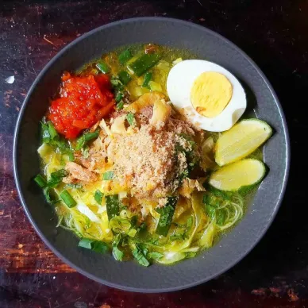
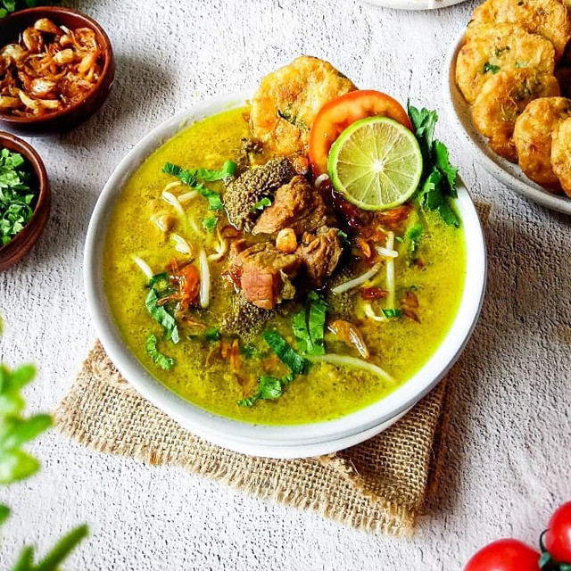
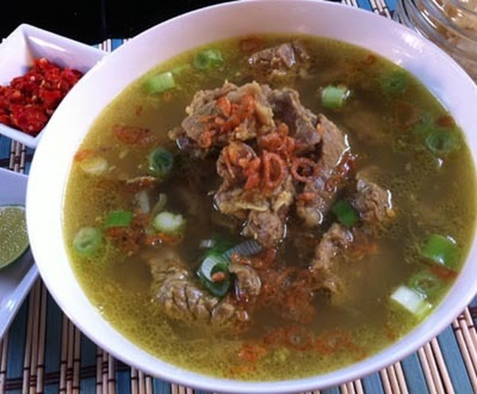

Soto Ayam
Soto ayam dengan kuah kuning gurih dan suwiran ayam pilihan.
Rp 15.000
Nikmati Soto Lezat Khas Indonesia dengan Harga Terjangkau
Soto melambangkan keharmonisan dan akulturasi budaya Nusantara. Filosofi utamnya adalah Unity in Diversoto (keberagaman rasa yang menyatu) dan "Bagi Roso, Bagi Roto" mengajak manusia saling berbagi rasa Nikmat dalam kebersamaan.
Soto ayam dengan kuah kuning gurih dan suwiran ayam pilihan.
Rp 15.000

Soto khas Betawi dengan kuah santan dan daging sapi empuk.
Rp 25.000

Soto ayam khas Lamongan dengan taburan koya yang gurih.
Rp 18.000

Soto bening khas Kudus dengan rasa ringan dan segar.
Rp 17.000

Soto dengan kuah santan kental dan rempah khas Medan.
Rp 22.000

Potongan daging sapi pilihan dengan kuah kaldu yang kaya rasa.
Rp 23.000
UMKM Soto Nusantara berdiri sejak tahun 2020 dengan tujuan memperkenalkan beragam soto khas Indonesia kepada masyarakat.
📍 Tangerang, Banten
📞 0812-3456-7890
📧 sotonusantara@gmail.com